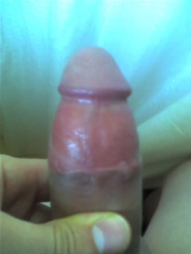

|
Unhappy after laser frenuloplasty and free hand partial circumcision
The laser treatment left a sturdy hard root - however it appears the partial circumcision has been done unevenly resulting in the downward bend.

Hi again! After seeing Harmen's page which has a photo of his penis after frenuloplasty, with a full foreskin retracting evenly around the shaft, I started to suspect that that's what it's supposed to be like, only I wanted to make sure that he's not the exception. According to what you say, what I was suspecting was true : my third operation has still not solved the problem totally.
It's not really the case that the foreskin is attached to the glans, I think the more accurate scenario is that my foreskin looks "assymetrical", but that the only reason why it's assymetrical is because the front side (the frenulum side) has always been restricted by the frenulum thus not allowing it to grow the full potential elasticity. I should think that after a partial circumcision, it shouldn't be too much to ask for half my foreskin (the half that's left) to retract evenly! Also, I feel like the full potential of my erection can't be reached because of this restriction, not allowing the full lenght and hardness to "happen"(or maybe I'm just stuck on the idea that I'll gain some extra size by the total frenulum removal!)
I've sent some photos to help you visualize what I'm talking about.
As far as the psychological-sexual part is concerned, here's the situation :
I'm 22. I hadn't had sex before I discovered the phimosis problem. Since I discovered it I felt really insecure about it and I just thought that I wouldn't do anything until I fixed the problem. I had my first operation, and thought things were going to be fixed, but they weren't, then I had another one to supposedly finish the incomplete frenulum removal of the first operation, still problem not solved, and then I had a partial circumcision because they discovered after all this time that I also have a phimotic ring. After the partial circumcision, still the problem is not completely solved.
So as far as the psychological side goes, I must say that the key word is Frustration. It's really frustrating to know that, well it's just not working properly!! it just puts you off, it's like you get into the battle having lost a limb already. Before I had my glans uncovered I had no idea what it feels like to "non-problematic" people when they have sex. It's like you are blind to it, and suddenly someone uncovers your eyes! It might seem that I'm making too big a deal out of it, but I'm not. Because it is the biggest deal, it's the gift that God has given to all of us, and it determines your whole life and character. The way you are able to make love to/with a person IS a big deal, because it's the ultimate expression of your love towards them and, if you feel unable or restricted in this act, then it's like you can't love to the extent you really are able to. I was lucky to some degree to realize it relatively young, but I can't imagine people who spend half or more of their lives never really enjoying or feeling the completeness of sexual intercourse.
I hope I wasn't babbling, thanks for this site and opportunity to discuss and express these things! |